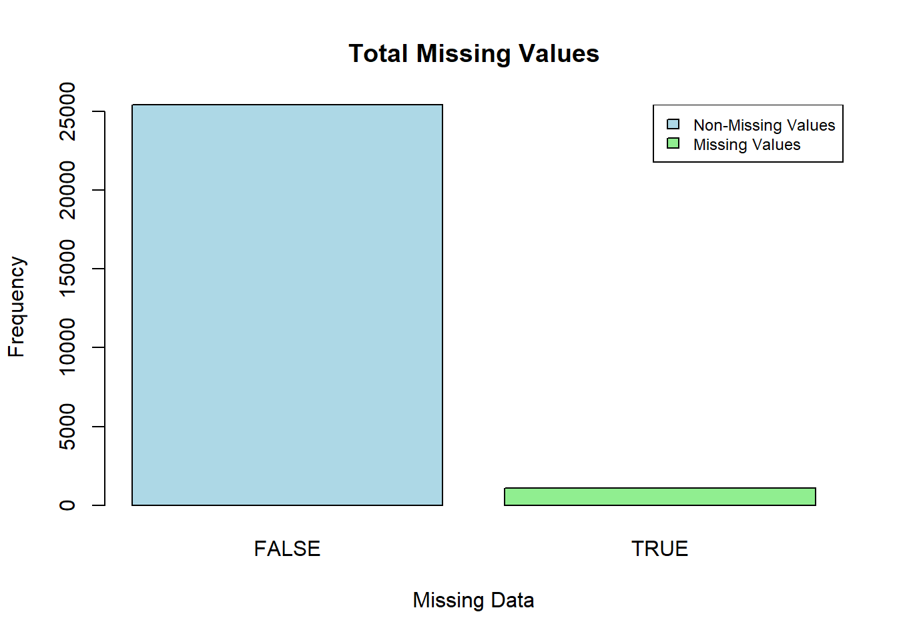
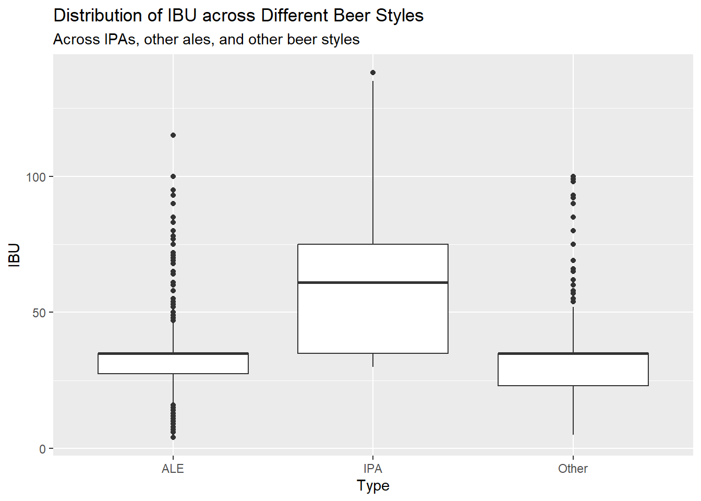

DDS Project 1: Beers and Breweries
Stephanie Duarte and Catherine Ticzon
2023-06-19
Introduction
The purpose of this document is to share the results and code for an initial data exploration analysis of the following data sets: beers and breweries.
Below are the questions addressed in this file:
- How many breweries are in each state?
- Merge beer data with the breweries data. Print the first 6
observations and the last six observations to check the merged
file.
- Address the missing values in each column.
- Compute the median alcohol content and international bitterness unit
for each state. Plot a bar chart to compare.
- Which state has the maximum alcoholic (ABV) beer? Which state has
the most bitter (IBU) beer?
- Comment on the summary statistics and distribution of the ABV
variable.
- Is there an apparent relationship between the bitterness of the beer
and its alcoholic content? Draw a scatter plot.
- Budweiser would also like to investigate the difference with respect to IBU and ABV between IPAs (India Pale Ales) and other types of Ale (any beer with “Ale” in its name other than IPA).
# Load data sets
beers <- read.csv("C:\\Users\\48103982\\Documents\\MSDS\\6306 Doing Data Science\\Project 1\\Beers.csv", header=TRUE)
breweries <- read.csv("C:\\Users\\48103982\\Documents\\MSDS\\6306 Doing Data Science\\Project 1\\Breweries.csv", header=TRUE)
# Remove white space from data frame
breweries2 <- breweries %>% mutate(across(where(is.character), str_trim))
# Create lookup to add full state name
lookup <- data.frame(abb = state.abb, State = state.name)
colnames(breweries2)[4] = "abb"
breweriesClean <- merge(breweries2, lookup, by.x = "abb", by.y = "abb", all.x = TRUE, all.y = FALSE)1. How many breweries are in each state?
The code used to answer this questions first groups the breweries by state and that was stored as its own variable. A bar graph and a heatmap are used to visualize the information. The variable that stores the states and the corresponding number of breweries is printed out to see a list of all values.
Summary:
- Total of 558 breweries across the U.S.
- 3 states with 30 or more breweries
- 7 states with 20-29 breweries
- 9 states with 10-19 breweries
- 31 states with 10 breweries or less
- 3 states with 30 or more breweries
- Colorado has the most number of breweries (47)
numberOfBreweries <- count(group_by(breweriesClean, State))
# write_csv(numberOfBreweries, path="C:\\Users\\48103982\\Documents\\MSDS\\6306 Doing Data Science\\Project 1\\numberOfBreweries.csv")
# Create a plot with number of breweries by state
ggplot(data=breweries, mapping = aes(x=State)) +
geom_bar() +
theme(axis.text.x = element_text(angle=90),
axis.title.x = element_blank(),
axis.title.y = element_blank()) +
labs(title="Number of Breweries in Each State") # Print out values
print(numberOfBreweries, n=51)## # A tibble: 51 × 2
## # Groups: State [51]
## State n
## <chr> <int>
## 1 Alabama 3
## 2 Alaska 7
## 3 Arizona 11
## 4 Arkansas 2
## 5 California 39
## 6 Colorado 47
## 7 Connecticut 8
## 8 Delaware 2
## 9 Florida 15
## 10 Georgia 7
## 11 Hawaii 4
## 12 Idaho 5
## 13 Illinois 18
## 14 Indiana 22
## 15 Iowa 5
## 16 Kansas 3
## 17 Kentucky 4
## 18 Louisiana 5
## 19 Maine 9
## 20 Maryland 7
## 21 Massachusetts 23
## 22 Michigan 32
## 23 Minnesota 12
## 24 Mississippi 2
## 25 Missouri 9
## 26 Montana 9
## 27 Nebraska 5
## 28 Nevada 2
## 29 New Hampshire 3
## 30 New Jersey 3
## 31 New Mexico 4
## 32 New York 16
## 33 North Carolina 19
## 34 North Dakota 1
## 35 Ohio 15
## 36 Oklahoma 6
## 37 Oregon 29
## 38 Pennsylvania 25
## 39 Rhode Island 5
## 40 South Carolina 4
## 41 South Dakota 1
## 42 Tennessee 3
## 43 Texas 28
## 44 Utah 4
## 45 Vermont 10
## 46 Virginia 16
## 47 Washington 23
## 48 West Virginia 1
## 49 Wisconsin 20
## 50 Wyoming 4
## 51 <NA> 1sum(numberOfBreweries$n)## [1] 558Create a heatmap with data
numberOfBreweries$region <- tolower(numberOfBreweries$State)
states <- map_data("state")
map.df <- merge(states,numberOfBreweries, by="region", all.x=T)
map.df <- map.df[order(map.df$order),]
ggplot(map.df, aes(x=long,y=lat,group=group))+
geom_polygon(aes(fill=n)) +
geom_path() +
scale_fill_continuous(low = "orange",
high = "darkblue",
na.value = "grey50") +
ggtitle("Number of Breweries in Each State ") +
theme(axis.text.x = element_blank(),
axis.text.y = element_blank(),
axis.title.x = element_blank(),
axis.title.y = element_blank(),
panel.border = element_blank(),
panel.grid.major = element_blank(),
panel.grid.minor = element_blank(),
panel.background = element_blank(),
axis.ticks = element_blank()) +
labs(fill = "Number of Breweries") +
coord_map()2. Merge beer data with the breweries data. Print the first 6 observations and the last six observations to check the merged file.
Merging the beer and breweries data sets into one file is necessary to answer the remaining questions. Data sets were merged by brewery ID numbers.
# Rename brewery ID column so they match in both data sets before joining
colnames(breweriesClean)[2] <- "Brewery_id"
bb <- full_join(beers, breweriesClean, by = "Brewery_id") %>%
rename("Beer" = "Name.x",
"Brewery" = "Name.y")
bb$ABV = as.numeric(bb$ABV)
head(bb, 6)## Beer Beer_ID ABV IBU Brewery_id Style
## 1 Pub Beer 1436 0.050 NA 409 American Pale Lager
## 2 Devil's Cup 2265 0.066 NA 178 American Pale Ale (APA)
## 3 Rise of the Phoenix 2264 0.071 NA 178 American IPA
## 4 Sinister 2263 0.090 NA 178 American Double / Imperial IPA
## 5 Sex and Candy 2262 0.075 NA 178 American IPA
## 6 Black Exodus 2261 0.077 NA 178 Oatmeal Stout
## Ounces abb Brewery City State
## 1 12 OR 10 Barrel Brewing Company Bend Oregon
## 2 12 IN 18th Street Brewery Gary Indiana
## 3 12 IN 18th Street Brewery Gary Indiana
## 4 12 IN 18th Street Brewery Gary Indiana
## 5 12 IN 18th Street Brewery Gary Indiana
## 6 12 IN 18th Street Brewery Gary Indianatail(bb, 6)## Beer Beer_ID ABV IBU Brewery_id
## 2405 Rocky Mountain Oyster Stout 1035 0.075 NA 425
## 2406 Belgorado 928 0.067 45 425
## 2407 Rail Yard Ale 807 0.052 NA 425
## 2408 B3K Black Lager 620 0.055 NA 425
## 2409 Silverback Pale Ale 145 0.055 40 425
## 2410 Rail Yard Ale (2009) 84 0.052 NA 425
## Style Ounces abb Brewery City State
## 2405 American Stout 12 CO Wynkoop Brewing Company Denver Colorado
## 2406 Belgian IPA 12 CO Wynkoop Brewing Company Denver Colorado
## 2407 American Amber / Red Ale 12 CO Wynkoop Brewing Company Denver Colorado
## 2408 Schwarzbier 12 CO Wynkoop Brewing Company Denver Colorado
## 2409 American Pale Ale (APA) 12 CO Wynkoop Brewing Company Denver Colorado
## 2410 American Amber / Red Ale 12 CO Wynkoop Brewing Company Denver Colorado3. Address the missing values in each column
The code used to answer this question first identifies all instances of missing data. Then, code was written to summarize the two methods used to address the missing data. A barplot and boxplots are used to visualize the data.
Summary:
- 44.2% (n=1,072) of data had missing values
- 2.5% (n=62)of data had missing values in the ABV column
- 41.7% (n=1,005) of data had missing values in IBU column
- 2.5% (n=62)of data had missing values in the ABV column
Two methods used to address the missing data:
Eliminate missing data
- Minimum 2.7%
- Median: 5.7%
- Mean: 5.99%
- Maximum: 12.5%
- Minimum 2.7%
Replace the missing data with the average
- Minimum: 0.1%
- Median: 5.6%
- Mean: 5.977%
- Maximum: 12.8%
- Minimum: 0.1%
While there are slight differences (less than 0.3%) between the median, mean, and maximum, the largest resulting difference between the two methods was related to the minimum. By eliminating the missing data, the minimum is 2.7; by replacing the missing data with the average, the minimum is 0.1%.
summary(bb) ## Beer Beer_ID ABV IBU
## Length:2410 Min. : 1.0 Min. :0.00100 Min. : 4.00
## Class :character 1st Qu.: 808.2 1st Qu.:0.05000 1st Qu.: 21.00
## Mode :character Median :1453.5 Median :0.05600 Median : 35.00
## Mean :1431.1 Mean :0.05977 Mean : 42.71
## 3rd Qu.:2075.8 3rd Qu.:0.06700 3rd Qu.: 64.00
## Max. :2692.0 Max. :0.12800 Max. :138.00
## NA's :62 NA's :1005
## Brewery_id Style Ounces abb
## Min. : 1.0 Length:2410 Min. : 8.40 Length:2410
## 1st Qu.: 94.0 Class :character 1st Qu.:12.00 Class :character
## Median :206.0 Mode :character Median :12.00 Mode :character
## Mean :232.7 Mean :13.59
## 3rd Qu.:367.0 3rd Qu.:16.00
## Max. :558.0 Max. :32.00
##
## Brewery City State
## Length:2410 Length:2410 Length:2410
## Class :character Class :character Class :character
## Mode :character Mode :character Mode :character
##
##
##
## # Barplot of missing data
sum(is.na(bb))## [1] 1075df<- data.frame(table(is.na(bb)))
barplot(df$Freq , main = "Total Missing Values",
xlab = "Missing Data", ylab = "Frequency",
names.arg = c("FALSE","TRUE"),
col = c("lightblue","lightgreen"))
legend("topright",
c("Non-Missing Values","Missing Values"),
fill = c("lightblue","lightgreen"), cex = 0.75)
# Method 1: Eliminate missing data
completed_beer <- bb[complete.cases(bb),] #bb with only complete records
dim(completed_beer)## [1] 1401 11# Create Boxplot
summary(completed_beer$ABV)## Min. 1st Qu. Median Mean 3rd Qu. Max.
## 0.0270 0.0500 0.0570 0.0599 0.0680 0.1250ggplot(data = completed_beer, mapping = aes(x = ABV)) +
geom_boxplot(fill = "red", width=.1) +
labs(x = "ABV", title = "ABV Distribution") +
theme(axis.text.y=element_text(colour="white"))
#Method 2: replace missing data with average
average_beer <- bb
averageABV <- mean(average_beer$ABV, na.rm = TRUE)
averageIBU <- mean(average_beer$IBU, na.rm = TRUE)
average_beer$IBU[is.na(average_beer$IBU)]<- averageIBU
average_beer$ABV[is.na(average_beer$ABV)]<- averageABV
colSums(is.na(average_beer))## Beer Beer_ID ABV IBU Brewery_id Style Ounces
## 0 0 0 0 0 0 0
## abb Brewery City State
## 0 0 0 8#create Boxplot
summary(average_beer$ABV)## Min. 1st Qu. Median Mean 3rd Qu. Max.
## 0.00100 0.05000 0.05700 0.05977 0.06700 0.12800ggplot(data = average_beer, mapping = aes(x = ABV)) +
geom_boxplot(fill = "red", width=.1) +
labs(x = "ABV", title = "ABV Distribution") +
theme(axis.text.y=element_text(colour="white"))4. Compute the median alcohol content and international bitterness unit for each state. Plot a bar chart to compare.
The code used to answer this question first creates a variable that stores the median ABV for each state. Then, a bar graph is created to visualize the information. The same is done for the median IBU.
Summary:
Alcohol content (ABV):
- Mean of all state ABV medians: 5.6%
- Kentucky has the highest ABV median: 6.25%
- Utah has the lowest ABV median: 4%
Bitterness (IBU):
- Mean of all state IBU medians: 36.98
- Maine has the highest IBU median: 61
- Wisconsin has the lowest IBU median: 19
- South Dakota does not have IBU data for its beers
# Calculate median ABV by state, remove NA row in State
medABV <- bb %>%
group_by(State) %>%
filter(!is.na(ABV)) %>%
filter(!is.na(State)) %>%
summarize(medianABV = median(ABV))
mean_median_abv <- mean(medABV$medianABV)
# Plot median ABV
ggplot(data= medABV, mapping = aes(x=State, y=medianABV, fill=State)) +
geom_col() +
theme(axis.text.x = element_text(angle=90,hjust=0.95,vjust=0.2),
axis.title.x = element_blank(),
axis.title.y = element_blank(),
legend.position = "none",
panel.grid.major.y = element_line(color= "grey"),
panel.grid.major.x = element_blank(),
panel.grid.minor.x = element_blank(),
panel.grid.minor.y = element_line(color="grey"),
panel.background = element_blank()) +
scale_y_continuous(labels = scales::percent_format(accuracy = 1)) +
#expand_limits(y=c(0.03, 0.08)) +
labs(title="Median ABV Percentage of Beers by State") +
geom_hline(yintercept = mean_median_abv, color = "black", linetype="dashed")# Calculate median IBU by state
medIBU <- bb %>%
group_by(State) %>%
filter(!is.na(IBU)) %>%
filter(!is.na(State)) %>%
summarize(medianIBU = median(IBU))
# Where is South Dakota?
# bb %>% filter(abb=="SD")
# Beers in SD do not have corresponding IBU
mean_median_IBU <- mean(medIBU$medianIBU)
# Plot median IBU by state
ggplot(data= medIBU, mapping = aes(x=State, y=medianIBU, fill=State)) +
geom_col() +
theme(axis.text.x = element_text(angle=90,hjust=0.95,vjust=0.2),
axis.title.x = element_blank(),
axis.title.y = element_blank(),
legend.position = "none",
panel.grid.major.y = element_line(color="grey"),
panel.grid.major.x = element_blank(),
panel.grid.minor.x = element_blank(),
panel.grid.minor.y = element_line(color="grey"),
panel.background = element_blank()) +
labs(title="Median IBU of Beers by State") +
geom_hline(yintercept = mean_median_IBU, color = "black", linetype="dashed")# Reorder the levels of the State variable based on median ABV
medABV$State <- factor(medABV$State, levels = medABV$State[order(medABV$medianABV,
decreasing = TRUE)])
medABV50 <- medABV[-c(51), ] # Remove row where State is NA
# Create the median ABV plot with ordered bars
ggplot(medABV50, aes(x = State, y = medianABV, fill = State)) +
geom_bar(stat = "identity") +
labs(title = "Median ABV (Percent) of Craft Beers by State") +
theme(axis.text.x = element_text(angle = 90, hjust = .95, vjust = 0.2),
axis.title.x = element_blank(),
axis.title.y = element_blank(),
legend.position = "none",
panel.grid.major.y = element_line(color="grey"),
panel.grid.major.x = element_blank(),
panel.grid.minor.x = element_blank(),
panel.grid.minor.y = element_line(color="grey"),
panel.background = element_blank()) +
scale_y_continuous(labels = scales::percent_format(accuracy = 1)) +
geom_hline(yintercept = mean_median_abv, color = "black", linetype="dashed")# Reorder the levels of the State variable based on median IBU
medIBU$State <- factor(medIBU$State, levels = medIBU$State[order(medIBU$medianIBU,
decreasing = TRUE)])
# South Dakota is not on here because beers in SD do not have corresponding IBU
ggplot(data= medIBU, mapping = aes(x=State, y=medianIBU, fill=State)) +
geom_col() +
theme(axis.text.x = element_text(angle=90,hjust=0.95,vjust=0.2),
axis.title.x = element_blank(),
axis.title.y = element_blank(),
legend.position = "none",
panel.grid.major.y = element_line(color="grey"),
panel.grid.major.x = element_blank(),
panel.grid.minor.x = element_blank(),
panel.grid.minor.y = element_line(color="grey"),
panel.background = element_blank()) +
labs(title="Median IBU of Beers by State") +
geom_hline(yintercept = mean_median_IBU, color = "black", linetype="dashed")5. Which state has the maximum alcoholic (ABV) beer? Which state has the most bitter (IBU) beer?
The code used to answer this question simply determines which state has the maximum value in the ABV and IBU column.
Summary:
- Highest ABV: Lee Hill Series Ale (12.8%) made by Upslope Brewing
Company – Colorado
- Most bitter: Bitter Bitch Imperial IPA (138) made by Astoria Brewing Company – Oregon
# Find the state with the maximum alcoholic (IBU) beer
state_with_max_IBU <- bb[which.max(bb$IBU), "State"]
bb[which.max(bb$IBU),]## Beer Beer_ID ABV IBU Brewery_id
## 148 Bitter Bitch Imperial IPA 980 0.082 138 375
## Style Ounces abb Brewery City
## 148 American Double / Imperial IPA 12 OR Astoria Brewing Company Astoria
## State
## 148 Oregon# Find the state with the maximum alcoholic (ABV) beer
state_with_max_abv <- bb[which.max(bb$ABV), "State"]
bb[which.max(bb$ABV),]## Beer Beer_ID ABV IBU
## 2279 Lee Hill Series Vol. 5 - Belgian Style Quadrupel Ale 2565 0.128 NA
## Brewery_id Style Ounces abb Brewery City
## 2279 52 Quadrupel (Quad) 19.2 CO Upslope Brewing Company Boulder
## State
## 2279 Colorado7. Is there an apparent relationship between the bitterness of the beer and its alcoholic content? Draw a scatter plot. Make your best judgment of a relationship and EXPLAIN your answer.
The code used to answer this question creates a scatterpolt where the x-axis is IBU and the y-axis is ABV.
Summary:
- Visually, it looks like there is some positive relationship between
IBU and ABV
- As IBU increases, ABV tends to also increase
ggplot(data = beers, mapping = aes(x=IBU, y=ABV)) +
geom_count(aes(color = ..n..), alpha=.5) +
geom_smooth() +
scale_y_continuous(labels = scales::percent_format(accuracy = 1)) +
theme(panel.grid.major.y = element_line(color="grey"),
panel.grid.major.x = element_blank(),
panel.grid.minor.x = element_line(color="grey"),
panel.grid.minor.y = element_line(color="grey"),
panel.background = element_blank()) +
scale_color_gradient(low = "red", high ="navy") +
labs(title="Alcohol Content (ABV) and Bitterness (IBU) of Beers",
colour="Number of Beers") +
guides(color = guide_legend(override.aes = list(size = c(2, 4, 6, 8))),
size = "none")## `geom_smooth()` using method = 'gam' and formula = 'y ~ s(x, bs = "cs")'8. Budweiser would also like to investigate the difference with respect to IBU and ABV between IPAs (India Pale Ales) and other types of Ale (any beer with “Ale” in its name other than IPA).
You decide to use KNN classification to investigate this relationship. Provide statistical evidence one way or the other. You can of course assume your audience is comfortable with percentages … KNN is very easy to understand conceptually. In addition, while you have decided to use KNN to investigate this relationship (KNN is required) you may also feel free to supplement your response to this question with any other methods or techniques you have learned. Creativity and alternative solutions are always encouraged.
Transform data to analyze in Test 1:
IPA <- bb %>%
filter(str_detect(Style, "IPA"))
ale <- bb %>%
filter(str_detect(Style,"Ale"))
# Some IPAs are still in the ale variable; need to remove
other_ales <- ale[!str_detect(ale$Style, "\\bIPA\\b"), ]
# Dataset that includes both IPAs and other ales only
allAles <- bb[str_detect(bb$Style, "\\bIPA\\b") | str_detect(bb$Style, "\\bAle\\b"), ]
allAles_complete <- allAles[complete.cases(allAles$ABVpercent), ]
# Create a column Is_IPA
allAles_complete$Is_IPA <- ifelse(str_detect(allAles_complete$Style, "\\bIPA\\b"), "IPA", "Other Ale")Test 1: If a beer has an ABV of 5.6% (median ABV across all states), what are the chances that it is an IPA?
The code used to explore this question first creates training and split set to be used in the knn model. Then, knn models are run.
Summary:
- Created a dataset that includes ales only (both
IPAs and other ales)
- Created a training set and a test set with an 80/20 split
- Using knn where k=3 and k=5, there is less than a 6% chance that the beer is an IPA (94.11% probability that it is another ale)
set.seed(6)
splitPerc = .8
# Split into training and test sets
trainInd = sample(1:dim(allAles_complete)[1],round(splitPerc * dim(allAles_complete)[1]))
allAlesTrain = allAles_complete[trainInd,]
allAlesTest = allAles_complete[-trainInd,]
abvTest5 <- data.frame(ABVpercent = 5.6)
knn(allAlesTrain[,"ABVpercent"], abvTest5, allAlesTrain$Is_IPA, prob = TRUE, k = 3)## [1] Other Ale
## attr(,"prob")
## [1] 0.9411765
## Levels: IPA Other Aleknn(allAlesTrain[,"ABVpercent"], abvTest5, allAlesTrain$Is_IPA, prob = TRUE, k = 5)## [1] Other Ale
## attr(,"prob")
## [1] 0.9411765
## Levels: IPA Other AleTest 2: Across all beer styles (IPAs, other ales, and other), which knn model has the most accuracy?
The code used to explore this question uses the data set where the missing values are replaced with the medians. Then, a knn model is run for where k=1 to k=100. The data set used in this code includes IPAs, other ales, and other beer styles.
Summary:
- k=5 is the most accurate; where k= 5…
- Accuracy is 52.29%
- Of the other ales, 39.56% were incorrectly classified
- Of the IPAS, 39.1% were incorrectly classified
- Of the other types of beers (neither ale nor IPA), 61.71% were incorrectly classified
# Classify IPAs and Ales
beertypes = ifelse(str_detect(bb$Style,"IPA")==TRUE,"IPA",ifelse(str_detect(bb$Style,"Ale")==TRUE,"ALE","Other"))
bb$Type <- beertypes
head(bb)## Beer Beer_ID ABV IBU Brewery_id Style
## 1 Pub Beer 1436 0.050 NA 409 American Pale Lager
## 2 Devil's Cup 2265 0.066 NA 178 American Pale Ale (APA)
## 3 Rise of the Phoenix 2264 0.071 NA 178 American IPA
## 4 Sinister 2263 0.090 NA 178 American Double / Imperial IPA
## 5 Sex and Candy 2262 0.075 NA 178 American IPA
## 6 Black Exodus 2261 0.077 NA 178 Oatmeal Stout
## Ounces abb Brewery City State ABVpercent Type
## 1 12 OR 10 Barrel Brewing Company Bend Oregon 5.0 Other
## 2 12 IN 18th Street Brewery Gary Indiana 6.6 ALE
## 3 12 IN 18th Street Brewery Gary Indiana 7.1 IPA
## 4 12 IN 18th Street Brewery Gary Indiana 9.0 IPA
## 5 12 IN 18th Street Brewery Gary Indiana 7.5 IPA
## 6 12 IN 18th Street Brewery Gary Indiana 7.7 Other# Impute missing values with median
bbimpute <- bb
bbimpute$IBU[is.na(bbimpute$IBU)]<- median(bbimpute$IBU, na.rm = TRUE)
bbimpute$ABV[is.na(bbimpute$ABV)]<- median(bbimpute$ABV, na.rm = TRUE)
bbimpute$ABVpercent[is.na(bbimpute$ABVpercent)]<- median(bbimpute$ABVpercent, na.rm = TRUE)
bbimpute = bbimpute[complete.cases(bbimpute),]
# Create a Data set for ABV, IBU, and Type
btrain = bbimpute %>% select(c("ABV","IBU","Type"))
# Create kNN for k
set.seed(100)
iterations = 100
numks = 10
splitPerc = .70
masterAcc = matrix(nrow = iterations, ncol = numks)
for(j in 1:iterations)
{
trainIndices = sample(1:dim(btrain)[1],round(splitPerc * dim(btrain)[1]))
train = btrain[trainIndices,]
test = btrain[-trainIndices,]
for(i in 1:numks)
{
classifications = knn(train[,c(1,2)],test[,c(1,2)],train$Type, prob = TRUE, k = i)
table(classifications,test$Type)
CM = confusionMatrix(table(classifications,test$Type))
masterAcc[j,i] = CM$overall[1]
}
}
CM## Confusion Matrix and Statistics
##
##
## classifications ALE IPA Other
## ALE 168 53 140
## IPA 15 97 22
## Other 90 29 107
##
## Overall Statistics
##
## Accuracy : 0.516
## 95% CI : (0.4788, 0.553)
## No Information Rate : 0.3786
## P-Value [Acc > NIR] : 4.968e-14
##
## Kappa : 0.2522
##
## Mcnemar's Test P-Value : 3.120e-07
##
## Statistics by Class:
##
## Class: ALE Class: IPA Class: Other
## Sensitivity 0.6154 0.5419 0.3978
## Specificity 0.5692 0.9317 0.7367
## Pos Pred Value 0.4654 0.7239 0.4735
## Neg Pred Value 0.7083 0.8603 0.6727
## Prevalence 0.3786 0.2483 0.3731
## Detection Rate 0.2330 0.1345 0.1484
## Detection Prevalence 0.5007 0.1859 0.3135
## Balanced Accuracy 0.5923 0.7368 0.5672MeanAcc = colMeans(masterAcc)
plot(seq(1,numks,1),MeanAcc, type = "l")which.max(MeanAcc)## [1] 1max(MeanAcc) ## [1] 0.5413731classifications = knn(train[,c(1,2)],test[,c(1,2)],train$Type, prob = TRUE, k = 5)
table(classifications,test$Type)##
## classifications ALE IPA Other
## ALE 165 41 147
## IPA 15 109 19
## Other 93 29 103CM = confusionMatrix(table(classifications,test$Type))
CM## Confusion Matrix and Statistics
##
##
## classifications ALE IPA Other
## ALE 165 41 147
## IPA 15 109 19
## Other 93 29 103
##
## Overall Statistics
##
## Accuracy : 0.5229
## 95% CI : (0.4857, 0.5599)
## No Information Rate : 0.3786
## P-Value [Acc > NIR] : 2.736e-15
##
## Kappa : 0.2648
##
## Mcnemar's Test P-Value : 8.234e-06
##
## Statistics by Class:
##
## Class: ALE Class: IPA Class: Other
## Sensitivity 0.6044 0.6089 0.3829
## Specificity 0.5804 0.9373 0.7301
## Pos Pred Value 0.4674 0.7622 0.4578
## Neg Pred Value 0.7065 0.8789 0.6653
## Prevalence 0.3786 0.2483 0.3731
## Detection Rate 0.2288 0.1512 0.1429
## Detection Prevalence 0.4896 0.1983 0.3121
## Balanced Accuracy 0.5924 0.7731 0.5565General comparisons of the different beers styles (IPAs, other ales, and other).
The code used in this section creates visualizations across the different beer styles: IPAs, other ales, and other beers. The first scatterplot graphs IBU and ABV by beer style; missing values were not included in this plot. The second scatterplot graphs the same information but replaces the missing values with medians. The box plot visualizes the spread of the IBU based on beer type.
Summary:
- Generally, IPAs have higher ABV and IBU than other beers
- Visually there looks to be a steeper positive relationship between
ABV and IBU than the other types of beers
- Visually there looks to be a steeper positive relationship between
ABV and IBU than the other types of beers
- Other beer styles (neither IPA or another ale) generally have less than 50 IBUs
# Create Plot of IBU vs ABV, between different beer types
bb %>% ggplot(aes(x = ABV, y = IBU, color=Type)) +
geom_point() +
stat_ellipse() +
labs(title="IBU and ABV of Different Beer Styles",
subtitle="Across IPAs, other ales, and other beers")# Impute missing values with median
bbimpute <- bb
bbimpute$IBU[is.na(bbimpute$IBU)]<- median(bbimpute$IBU, na.rm = TRUE)
bbimpute$ABV[is.na(bbimpute$ABV)]<- median(bbimpute$ABV, na.rm = TRUE)
bbimpute$ABVpercent[is.na(bbimpute$ABVpercent)]<- median(bbimpute$ABVpercent, na.rm = TRUE)
bbimpute = bbimpute[complete.cases(bbimpute),]
# Create plot
bbimpute %>% ggplot(aes(x = ABV, y = IBU, color=Type)) + geom_point() + stat_ellipse()# Boxplot of IBU across different beers
ggplot(data=btrain, mapping=aes(x =Type , y = IBU)) +
geom_boxplot() +
labs(title="Distribution of IBU across Different Beer Styles",
subtitle="Across IPAs, other ales, and other beer styles")
6. Comment on the summary statistics and distribution of the ABV variable.
The code used to answer this question first summarizes the ABV column and then uses a boxplot to visualize the spread of values. A histogram is also included and shows right-skewedness.
Summary: